Twenty fresh random styles, distilled into logo + wordmark. Every preview starts at the screenshot’s actual size: 203 × 74 pixels. All vector. New symbols for the things you love and the people you share them with.
01 Pocket premiere

203 × 74 · LIGHT
203 × 74 · DARK
A teal gadget with a glowing play window: your entire cultural life feels like something worth carrying around.
Inspect & use
The projector window turns a software skin into a compact media emblem. Two simple controls suggest remembering and sharing without inventing interface labels.
A tiny original cat curls up on a book under a crescent moon. A quiet visual-novel vignette for the stories you keep returning to.
Inspect & use
A reader’s companion combines the social and reading sides of MediaLog. Moon, face and book are reduced to large silhouettes so the mascot survives at small size.
A folded culture zine with a purple star tucked into its pages. A painted editorial identity for a diary with opinions.
Inspect & use
The star is a remembered favourite, drawn into the open publication. Broad serif lettering echoes a diskmag masthead without reproducing its tiny article columns.
A pair of golden headphones cuts through bold overlapping rings. Music, films and conversations share the same frequency.
Inspect & use
The original headphone silhouette is readable even when the ring pattern becomes texture. The paired ear cups give the symbol a social reading as well as a music one.
A pink neon heart with a cyan play cutout, beside a clean tube-letter wordmark. Your late-night discoveries have a place to glow.
Inspect & use
A heart and play sign combine emotional reaction with watching. The composition removes street labels and rain so the name stays clear at navigation size.
A blue forum-era membership strip with a gold heart badge. A compact identity that feels like belonging to a small club of people with good recommendations.
Inspect & use
The badge identifies shared taste rather than a rank or paid membership. The userbar gloss and stripes are broad enough to remain legible without microscopic captions.
Three coloured tiles travel in a circle at the end of a two-tone wordmark. One person’s discovery becomes another person’s next favourite.
Inspect & use
The P2P chunk vocabulary becomes a social exchange rather than transfer statistics. The emblem follows the title, making a different horizontal rhythm from the other marks.
A cyan-and-pink phrase grid forms a heart inside a handheld badge. A playful identity for the patterns in what you love.
Inspect & use
The tracker cursor becomes a play arrow for your own mix. One large heart replaces tiny note codes while retaining the reference’s palette and grid structure.
An oversized green toggle with a heart built into its switch. The trainer-screen energy becomes a simple invitation to save what you loved.
Inspect & use
The toggle expresses a personal favourite instead of a software cheat or capability. A heavy slanted title carries the arcade energy without tiny key labels.
A raster-banded eye hides a play arrow at its centre. Watching becomes noticing—and keeping a record of what mattered.
Inspect & use
The eye is drawn as a single memorable silhouette rather than a literal screen. One palette flows through both emblem and wordmark, making the whole lockup feel unified.
SVGs scale cleanly and adapt to light or dark colour schemes. Static SVGs and transparent PNG exports are included. No text-mode or ASCII artwork. The dark-panel styles keep their panel as part of the mark.